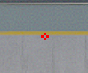

Kompetitív Gaming: A digitális érme két oldala A videójátékok világa már rég túllépett a nappalik kényelmén. A kompetitív gaming (e-sport) ma már megtölti a stadionokat, milliókat szegez a képernyők elé, és komoly karrierlehetőséget kínál a legtehetségesebbeknek. De vajon csak csillogásból áll ez a világ? Ahogy minden profi sportnak, ennek is megvannak a maga árnyoldalai. Az e-sport előnyei: Miért érdemes belevágni? A profi szintű játék nemcsak a reflexekről szól, hanem az elme pallérozásáról is. Kognitív fejlődés: A gyors döntéshozatal, a stratégiai gondolkodás és a multitasking képessége a mindennapi életben (vagy más munkakörökben) is hatalmas előnyt jelent. Csapatmunka és kommunikáció: Egy profi csapatban az összehangolt munka elengedhetetlen. Megtanulsz bízni másokban, kezelni a konfliktusokat és hatékonyan kommunikálni nyomás alatt. Karrier és jövedelem: A legjobbak nemcsak a nyereményalapokból, hanem szponzorációkból, streamingből és tartalomgyártásból is kiemelkedő életszínvonalat biztosíthatnak maguknak. Globális közösség: A gaming hidat képez kultúrák és kontinensek között. Életre szóló barátságok és szakmai kapcsolatok köttetnek a szervereken. A kihívások: Amire készülnöd kell Ne áltassuk magunkat: a profi lét nem csak játék és mese. Komoly áldozatokkal járhat, ha valaki a csúcsra tör. Mentális és fizikai megterhelés: A napi 8-12 óra gyakorlás kimerítő. Gyakori a kiégés (burnout), a stressz, fizikailag pedig az ínhüvelygyulladás vagy a hátfájás jelenthet problémát. Toxikus környezet: Sajnos az anonimitás mögé bújva sokan agresszívek a neten. A "toxic" közösségek kezelése komoly mentális állóképességet igényel. Bizonytalanság: Az e-sport karrier viszonylag rövid (gyakran 25-30 éves korra véget ér), és csak a legfelső 1% jut el oda, hogy ténylegesen megéljen belőle. Szociális elszigeteltség: Ha nem vigyázol az egyensúlyra, a gép előtti görnyedés a valódi emberi kapcsolatok rovására mehet.
| Gyors összehasonlítás | ||
|---|---|---|
| Jellemzők | Pozitívum | Kihívás |
| Készségek: | Fejlett reflexek, stratégiai elme | Mentális fáradtság, kiégés |
| Közösség: | Nemzetközi barátságok | Online zaklatás, toxicitás |
| Karrier: | Magas fizetési potenciál | Rövid aktív időszak, bizonytalanság |
| Életmód: | Rugalmasság, élmények | Mozgásszegény életmód |

A játékosok célkeresztet szoktak használni általába :D
Ez a kód a képen látható célkereszthez (Only cs2): CSGO-tqUtH-dkqHJ-XttCs-VUTXX-yCAMK
Összegzés: Kell az egyensúly! A kompetitív gaming egy csodálatos lehetőség az önkifejezésre és a fejlődésre, de csak akkor fenntartható, ha tudatosan kezeljük. A siker kulcsa nem csak a játékon belüli "skill", hanem a megfelelő fizikai edzés, a mentális egészség megőrzése és a pihenés. > Pro tipp: Ne feledd, a legjobb játékosok nem azok, akik a legtöbbet ülnek a gép előtt, hanem azok, akik a legokosabban osztják be az idejüket! Mennyire találtad ezt az irányt megfelelőnek? Esetleg szeretnéd, ha egy konkrét játéktípusra (pl. FPS vagy MOBA) is kihegyezném a szöveget?
67
Kapcsolat: +36 067 6767 | A web a Kandó tulajdona, amely oktatási célal jött létre | © 2026ban minden jog Fenttartva